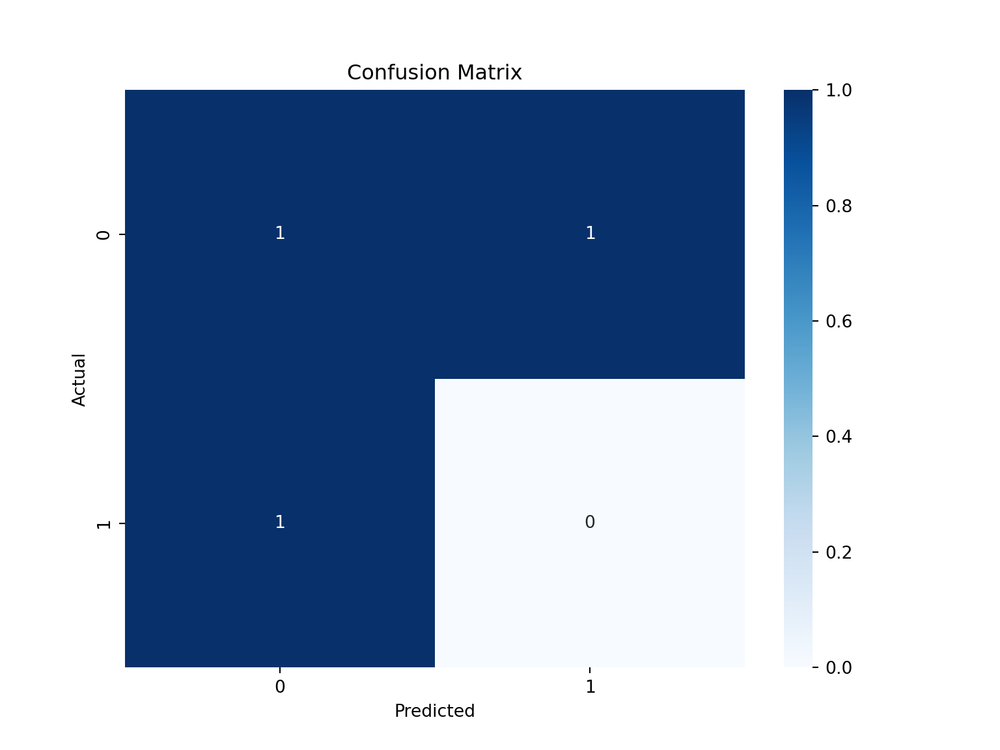
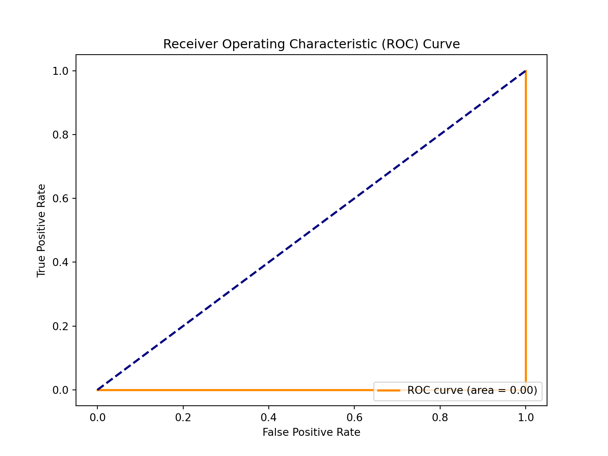
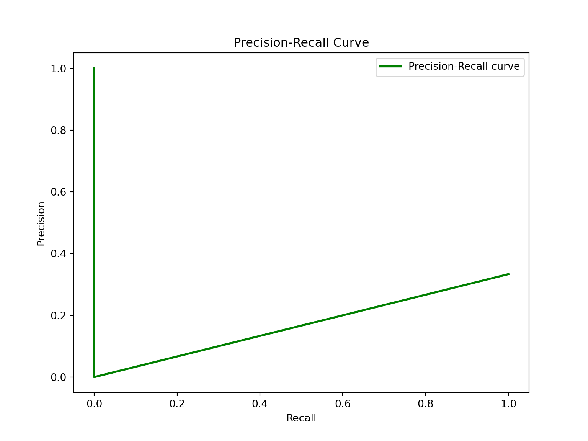

# Load necessary libraries
library(ggplot2)
library(dplyr)
# Generate sample data
set.seed(123)
data <- data.frame(
x1 = rnorm(100),
x2 = rnorm(100),
y = as.factor(sample(0:1, 100, replace = TRUE))
)
# Split data into training and testing sets
train_indices <- sample(1:nrow(data), 0.7 * nrow(data))
train_data <- data[train_indices, ]
test_data <- data[-train_indices, ]
# Build logistic regression model
model <- glm(y ~ x1 + x2, data = train_data, family = "binomial")
# Make predictions on the test set
predictions <- predict(model, newdata = test_data, type = "response")
# Evaluate model performance
# (metrics and confusion matrix code here)Exploring Classification in Machine Learning: A Comprehensive Guide
Introduction:
Machine learning has become an integral part of data analysis and decision-making processes. One of the fundamental tasks in machine learning is classification, where the goal is to assign predefined labels to input data based on its characteristics. In this blog post, we will delve into the world of classification, covering essential concepts, techniques, and providing hands-on code examples. Along the way, we’ll use Python and popular machine learning libraries to implement classification algorithms and visualize the results.
Basics of Classification
What is Classification?
Classification is a supervised learning technique where the algorithm learns from labeled training data and then predicts the class labels for unseen or future data points. The goal is to find a model that accurately maps the input features to the correct class.
Key Components
Features: These are the measurable properties or attributes of the data. In a classification problem, features are used to make predictions about the class labels.
Labels/Classes: These are the categories or groups that we want our model to predict. For instance, in a spam detection problem, the classes could be “spam” and “non-spam.”
Training Data: This is the labeled data used to train the classification model. It consists of input features and their corresponding class labels.
Test Data: Unlabeled data used to evaluate the performance of the trained model. The model predicts the class labels, and these predictions are compared with the actual labels to assess accuracy.
Classification Algorithms
1. Understanding Classification Algorithms:
Classification algorithms are supervised learning techniques that assign predefined labels to input data based on their characteristics. Common use cases include spam detection, sentiment analysis, and image recognition. Some popular classification algorithms include:
Logistic Regression
Decision Trees
Random Forest
Support Vector Machines (SVM)
k-Nearest Neighbors (k-NN)
Naive Bayes
Let’s talk a little bit more about the three of them.
Logistic Regression: Despite its name, logistic regression is used for binary classification problems. It models the probability of an instance belonging to a particular class.
Decision Trees: Decision trees recursively split the data based on features to create a tree-like structure. Each leaf node represents a class.
Random Forests: An ensemble method that builds multiple decision trees and combines their predictions. It often provides better generalization and robustness.
2. Implementing Logistic Regression:
Let’s start with one of the foundational classification algorithms, Logistic Regression. This algorithm is well-suited for binary classification problems. Below is a simple R code snippet for implementing logistic regression using the glm function:
3. Visualizing Model Performance:
Now, let’s visualize the performance of our logistic regression model using a ROC curve. We’ll use the pROC package for this task:
# Install and load the pROC package
#install.packages("pROC")
library(pROC)
# Create ROC curve
roc_curve <- roc(test_data$y, predictions)
plot(roc_curve, main = "ROC Curve", col = "blue", lwd = 2)This code will generate a ROC curve that visually represents the trade-off between sensitivity and specificity.
4. Exploring Decision Trees:
Decision trees are powerful and interpretable classification algorithms. They recursively split the data based on features to create a tree-like structure. Below is an example of implementing a decision tree using the rpart package:
# Install and load the rpart package
#install.packages("rpart")
library(rpart)
# Build decision tree model
tree_model <- rpart(y ~ x1 + x2, data = train_data, method = "class")
# Visualize the decision tree
plot(tree_model)
text(tree_model)5. Visualizing Decision Boundaries:
To understand how our classification algorithm separates classes, we can visualize decision boundaries. Let’s use the ggplot2 package for this
# Generate data for decision boundary plot
library(ggplot2)
boundary_data <- expand.grid(
x1 = seq(min(data$x1), max(data$x1), length.out = 100),
x2 = seq(min(data$x2), max(data$x2), length.out = 100)
)
# Predict class labels for decision boundary data
boundary_data$y_pred <- predict(tree_model, newdata = boundary_data, type = "class")
# Plot decision boundaries
ggplot() +
geom_point(data = data, aes(x = x1, y = x2, color = y)) +
geom_tile(data = boundary_data, aes(x = x1, y = x2, fill = y_pred), alpha = 0.1) +
labs(title = "Decision Boundaries") +
theme_minimal()jupyter: python3
Data Visualization with Python 3
Visualization is crucial for understanding the performance of a classification model. Let’s create three essential visualizations: a confusion matrix, a ROC curve, and a precision-recall curve.
#setting up the stage
import matplotlib.pyplot as plt
import numpy as np
import pandas as pd
import sklearn as sl
from sklearn.linear_model import LinearRegression
from sklearn.linear_model import LogisticRegression
from sklearn.model_selection import train_test_split
from sklearn.metrics import accuracy_score
x = np.arange(1, 25).reshape(12, 2)
y = np.array([0, 1, 1, 0, 1, 0, 0, 1, 1, 0, 1, 0])
xarray([[ 1, 2],
[ 3, 4],
[ 5, 6],
[ 7, 8],
[ 9, 10],
[11, 12],
[13, 14],
[15, 16],
[17, 18],
[19, 20],
[21, 22],
[23, 24]])yarray([0, 1, 1, 0, 1, 0, 0, 1, 1, 0, 1, 0])x_train, x_test, y_train, y_test = train_test_split(x, y)
x_trainarray([[ 3, 4],
[ 1, 2],
[17, 18],
[19, 20],
[13, 14],
[11, 12],
[ 9, 10],
[21, 22],
[ 7, 8]])x_testarray([[23, 24],
[15, 16],
[ 5, 6]])y_trainarray([1, 0, 1, 0, 0, 0, 1, 1, 0])y_testarray([0, 1, 1])X_train, X_test, y_train, y_test = train_test_split(x, y, test_size=0.2, random_state=42)
# Create and train the model
model = LogisticRegression()
model.fit(X_train, y_train)LogisticRegression()In a Jupyter environment, please rerun this cell to show the HTML representation or trust the notebook.
On GitHub, the HTML representation is unable to render, please try loading this page with nbviewer.org.
LogisticRegression()
# Make predictions
y_pred = model.predict(X_test)
# Evaluate accuracy
accuracy = accuracy_score(y_test, y_pred)
print(f"Accuracy: {accuracy}")Accuracy: 0.3333333333333333# Example code for Confusion Matrix, ROC Curve, and Precision-Recall Curve
from sklearn.metrics import confusion_matrix, roc_curve, precision_recall_curve, auc
import matplotlib.pyplot as plt
import matplotlib.pyplot as plt
import numpy as np
import pandas as pd
import seaborn as sns
# Confusion Matrix
cm = confusion_matrix(y_test, y_pred)
plt.figure(figsize=(8, 6))
sns.heatmap(cm, annot=True, fmt='g', cmap='Blues')
plt.title('Confusion Matrix')
plt.xlabel('Predicted')
plt.ylabel('Actual')
plt.show()
# ROC Curve
fpr, tpr, _ = roc_curve(y_test, model.predict_proba(X_test)[:,1])
roc_auc = auc(fpr, tpr)
plt.figure(figsize=(8, 6))<Figure size 1600x1200 with 0 Axes>plt.plot(fpr, tpr, color='darkorange', lw=2, label=f'ROC curve (area = {roc_auc:.2f})')[<matplotlib.lines.Line2D object at 0x137907310>]plt.plot([0, 1], [0, 1], color='navy', lw=2, linestyle='--')[<matplotlib.lines.Line2D object at 0x1351fa350>]plt.xlabel('False Positive Rate')Text(0.5, 0, 'False Positive Rate')plt.ylabel('True Positive Rate')Text(0, 0.5, 'True Positive Rate')plt.title('Receiver Operating Characteristic (ROC) Curve')Text(0.5, 1.0, 'Receiver Operating Characteristic (ROC) Curve')plt.legend(loc='lower right')<matplotlib.legend.Legend object at 0x1378f5a10>plt.show()
# Precision-Recall Curve
precision, recall, _ = precision_recall_curve(y_test, model.predict_proba(X_test)[:,1])
plt.figure(figsize=(8, 6))<Figure size 1600x1200 with 0 Axes>plt.plot(recall, precision, color='green', lw=2, label='Precision-Recall curve')[<matplotlib.lines.Line2D object at 0x1379bb290>]plt.xlabel('Recall')Text(0.5, 0, 'Recall')plt.ylabel('Precision')Text(0, 0.5, 'Precision')plt.title('Precision-Recall Curve')Text(0.5, 1.0, 'Precision-Recall Curve')plt.legend(loc='upper right')<matplotlib.legend.Legend object at 0x137a03cd0>plt.show()
6. Conclusion:
In this blog post, we explored classification algorithms, focusing on logistic regression and decision trees. We implemented the algorithms in R using RStudio and visualized their performance and decision boundaries. Classification is a vast field with many algorithms, and this post serves as a starting point for your journey into the world of supervised learning. Experiment with different algorithms, datasets, and visualizations to deepen your understanding and hone your machine learning skills.